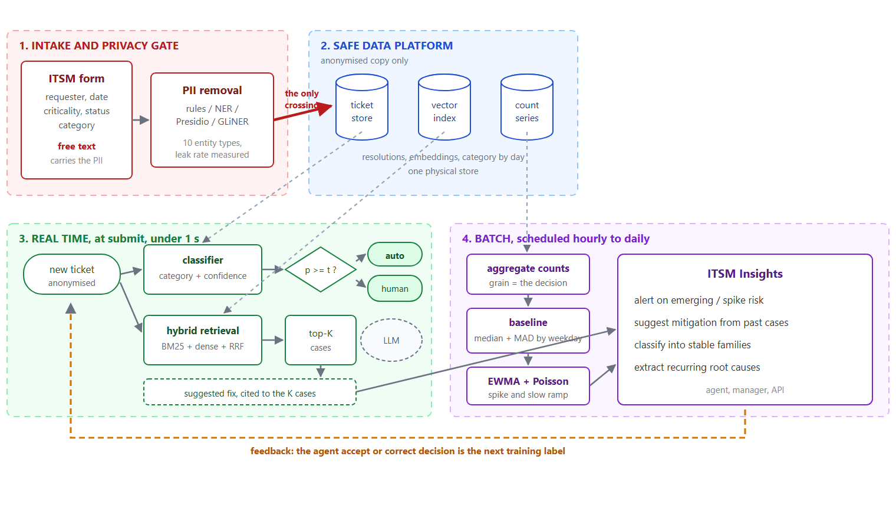

Structuring an IT support ticket flow: classification, similar case retrieval and weak signal detection
| Client | Thales, IT Support |
|---|---|
| Programme | Ticketing (Weak signal analysis) |
| Prepared by | Diametral |
| Date | 22 September 2026 |
| Status | Design and benchmark protocol, pre-production |
This case study consolidates the problem framing and literature review held in Notion with the technical design and experimental protocol implemented in the itsm-insights codebase. It describes what was built, why each choice was made, and what has actually been measured. Throughout the document, results already obtained are separated explicitly from protocols that are defined but not yet executed.
Two kinds of number appear in this document and they are never mixed. Measured results come from evaluation pipelines that have been run on the reference dataset, and are reported together with their protocol. Protocol means the experiment is designed, implemented and runnable, but has not yet been executed, and no figure is quoted for it. Section 3.3 labels every component accordingly.
The IT support team receives a steady flow of tickets that is not structured by request family. The consequence is not a reporting gap but an operational one: the team cannot see recurring themes, cannot prioritise on anything other than arrival order, and cannot anticipate load.
Tickets arrive through an ITSM channel (tool, mail or form, the exact channel is still to be confirmed with the client) and follow a four step chain:
The friction is concentrated at steps 2 and 4. At step 2 the qualification is manual and inconsistent. At step 4 the knowledge produced by resolving the ticket is not captured in any form that a future ticket can reuse. Everything downstream, meaning trend analysis, prioritisation and load anticipation, is blocked by those two steps.
This chain is a working hypothesis to be validated with the team. The open points (tool, available fields, existing categorisation) are tracked on the project Questions page and are revisited in section 3.4.
The problem is worth stating per audience, because the four stakeholders want different things and a single deliverable will not serve all of them equally.
| For whom | Problem | What would resolve it |
|---|---|---|
| IT support team (ticket handling) |
Ticket volume not categorised in a usable way. No consolidated view of recurring families. Prioritisation done as tickets arrive. | Classification into families, plus regular reporting of trends per family. |
| Support management (N+1 and N+2) |
No forward visibility on load peaks. Recurring or strained topics are discovered reactively, after the fact. | Weak signals and alerts on critical families, to anticipate incoming load. |
| Receiving IT teams (infrastructure, application, network) |
Repeated solicitations on similar subjects, with no capitalisation on root causes. | Identification of recurring families, to direct targeted corrective or preventive action. |
| Internal users (ticket emitters) |
Resolution time potentially lengthened when an unanticipated load peak hits. | Better anticipation of the resources to mobilise ahead of a foreseeable peak. |
Why this framing matters. The four rows are not one product. Agent assist (classification and suggestion), management analytics (families and alerts) and preventive action (root causes) have different buyers, different success metrics and different failure modes. Section 3.4 returns to this point: attempting all three at once is a programme, whereas each one alone is a deliverable.
The mission is phased. Phase 2 depends on Phase 1 in a hard sense, because weak signal detection on a family that has not been stabilised measures noise.
| Phase | Objective |
|---|---|
| Phase 1 Exploratory analysis | Identify the format and source of the ticket history (export, ITSM database, other). |
| Carry out an exploratory analysis covering volumetry, seasonality, channels, priorities and receiving teams. | |
| Define and validate the main ticket families with the teams, through classification or clustering. | |
| Identify, among those families, the most critical ones by business impact, recurrence and handling cost. | |
| Phase 2 Weak signals | Design a weak signal detection method per critical family, covering frequency evolution and trend breaks. |
| Build an alerting model on temporal trends to anticipate load peaks. | |
| Transverse | Put in place regular, legible reporting for management. |
Two bodies of work inform this project, and they are at very different stages of maturity. Ticket classification is a solved engineering problem with a well known failure mode. Weak signal detection on ticket volume is a much thinner literature, borrowed largely from strategic management and from AIOps vendor practice.
Problem. Helpdesk operators spent significant time manually qualifying each ticket across five properties: type, service, category, impact and urgency.
Approach. A classical NLP pipeline (text cleaning, stop word removal, TF-IDF vectorisation) followed by Naive Bayes and SVM classifiers from scikit-learn, with hyper-parameters tuned by grid search, served as a Flask API on Azure.
Result. About 96 percent accuracy on ticket type, where classes are well balanced. Performance was markedly degraded on urgency and impact, which are heavily imbalanced, with a single dominant class representing 70 to 90 percent of cases.
Key lesson. Data quality and class balance weigh more on the outcome than the choice of algorithm. An imbalanced target makes a global metric actively misleading.
Context. A real company ITSM history from an on-premise SQL database. Tickets are mostly in Lithuanian with some English, spread over 9 request types and 11 receiving teams.
Approach. A logistic regression over TF-IDF with a 10 000 term vocabulary, compared against a fine-tuned multilingual BERT. Class imbalance was handled by oversampling minority classes during diagnosis, while keeping the natural distribution at test time.
Result. Logistic regression reached macro-F1 0.78 and weighted F1 0.81, performing well on frequent categories. BERT reached a higher macro-F1, with precision and recall around 0.92 on semantically complex requests.
Author recommendations. Keep a final human review on ambiguous cases. Prefer macro-F1 over global accuracy so that rare families are properly evaluated. Reserve transformer models for semantically complex cases, and keep simple models where compute is constrained.
This industry panorama is useful less for its method than for its quantification of the problem. An organisation handling 2 000 tickets per month with a 35 percent mis-routing rate can lose the equivalent of 329 000 dollars per year, and each reassignment adds on average 47 minutes to resolution time. The article distinguishes three generations of triage: keyword rules (rigid), machine learning and NLP classification (more accurate, but limited to classifying), then knowledge graphs and autonomous agents (contextual, able to act rather than only label). Reported client outcomes include Bolt, whose mean resolution time fell from 129.8 hours to 62.7 hours over 11 months, and Descope, with a 54 percent reduction in resolution time and no added headcount.
The notion of a weak signal comes from strategic management (Igor Ansoff, 1975). It denotes early information, still ambiguous or incomplete, that announces a change before it becomes a strong signal, that is to say obvious but usually too late to act on preventively.
Transposed to IT tickets, a discreet evolution in the frequency or nature of tickets on a given family can announce a service degradation or an incoming load peak, before it becomes a major incident or a visible team overload.
The daily inbound and outbound ticket volume is compared against a trend computed over the previous 30 days. An anomaly fires only when two criteria hold simultaneously: a volume threshold (for example 25, 50 or 100 tickets) and a relative deviation threshold against the trend (for example 10, 25 or 50 percent).
Key lesson. A weak signal is a significant deviation from a recent baseline, not an absolute threshold. Combining a volume floor with a relative deviation test is what keeps the false positive rate tolerable.
Events are correlated by context, timing or topology to reduce noise. Fine grained behavioural anomaly detection then allows preventive intervention before user impact. The vendor claims up to 91 percent reduction in alert noise. The transferable idea is the ordering: reduce noise first, detect second.
Large scale aggregation and correlation of IT events, so that only relevant signals surface before root cause analysis. It was originally aimed at infrastructure telemetry rather than support tickets, but the principle of filtering a weak signal out of a voluminous and noisy stream transposes directly.
A 13 week moving average of volume per channel, adjusted by scope growth (active accounts and users) and by pre-identified business events such as a product release, a migration or a renewal, whose impact is measured. The formula is: forecast equals the 13 week mean multiplied by one plus growth, plus the event effect. The forecast is then converted into a staffing need.
Key lesson. A cheap and explainable method, meaning a spreadsheet and roughly 30 minutes a month, already gives useful anticipation. It is the baseline that any sophisticated model has to beat before it earns its complexity.
Five conclusions were carried directly into the design:
What the literature does not settle. None of the reviewed sources publishes a false alarm rate per series-day for ticket volume anomaly detection, nor a detection delay on slow ramps. Vendor claims such as a 91 percent noise reduction or a given share of autonomous resolution are not measurements that can be reproduced or compared. This is precisely the gap that the benchmark protocol in section 3.3 is designed to fill for this specific corpus, with ground truth.
The solution is a single pipeline feeding three deliverables: classify the incoming ticket, retrieve the cases already solved the same way, and monitor each family volume for early signs of degradation.

Figure 1. Target architecture. Solid borders are implemented. Dashed borders are designed and benchmarked, but not yet in the shipped service.
The privacy gate is step zero, not a feature. Ticket free text is the one field nobody controls, and it routinely contains a colleague name, a callback number, a mailbox or a staff number. None of it was collected on purpose, all of it is personal data, and it sits in the exact column every model reads. Anonymisation therefore sits on the path. It is the only door between the raw zone and everything else, and its leak rate is measured against ground truth rather than asserted.
Two clocks, not one. Suggestion is synchronous at ticket submit, under one second, and availability critical. Detection is a scheduled job, taking minutes and restartable. These are different runtimes with different service levels and different failure modes. Drawing them on one plane is the most common source of late surprise in this kind of design.
Abstention is part of the product. Routing is automated only above a confidence threshold. Below it, the ticket goes to human triage with the top three categories proposed. This follows directly from the recommendation in the literature to keep a human checkpoint, and it is what the coverage curve in section 3.3 exists to calibrate.
The feedback loop is not optional. The agent accept or correct decision returns to the store as the next training label. Without it the model never improves, production accuracy is never measured (only offline accuracy on a frozen split), and retrieval quality remains an opinion. A reassignment after an auto-route is a free negative label and is captured too.
No client extract was available at design time, and no public corpus is adequate. The three things that ITSM analytics needs at once, namely free text, a taxonomy and an audit trail, are never published together, because the first two are confidential and the third is meaningless without them.
| Source | Free text | Taxonomy | Audit trail | Verdict |
|---|---|---|---|---|
| UCI 498, incident event log | anonymised codes | anonymised codes | yes, 141 712 events | lifecycle and time series, no NLP |
| customer-support-tickets (Hugging Face) | yes, multilingual | yes | no | NLP works, no flow and no series |
| Kaggle IT support exports | yes | yes | no | same limitation |
Decision. Support all of them behind one canonical schema, and add a seeded synthetic generator as the default, so that the project is runnable offline on day one, with ground truth for the parts that would otherwise be unevaluable.
This is not a shortcut around real data. It is what makes the evaluation meaningful. The generator knows which tickets belong to which family (ground truth for clustering), which mood produced which wording (ground truth for sentiment), where it planted each personal identifier (ground truth for anonymisation, at character offset precision) and when it injected an anomaly (ground truth for weak signal detection, which is otherwise impossible to score at all).
The reference dataset holds 7 897 tickets over 12 categories, in French and English, driven by a catalogue of 12 families with slot filled templates, assignment groups, per family priority profiles and handling times.
The limit to keep in view. A generator reproduces the structure its author encoded and nothing else. Real ticket text is messier, more multilingual, more sarcastic, and contains failure modes nobody anticipated. Every figure in section 3.3 is therefore a relative comparison between approaches on a common footing, not a forecast of production performance. The moment a real extract is available, pointing the dataset setting at it runs the same pipelines without change.
Each component of the architecture has its own experiment notebook, with one question, several competing approaches measured on identical data, and one metric nominated in advance as the one that decides. The notebooks are the project documentation of why each production choice was made.
A shared methodological rule runs through all five: every approach runs in isolation. Where a production configuration composes two techniques, for example the NER model with the rule engine, the benchmark deliberately un-composes them, because a composed detector cannot be measured. A gap in one layer is covered by the other, and the score reports the union rather than the tool. Isolation is how the choice is made, composition is what ships.
| No. | Component | Approaches compared | Metric that decides |
|---|---|---|---|
| 1 | PII anonymisation | rule engine, HF NER, Presidio, GLiNER (zero shot) | residual personal values in the output |
| 2 | Weak signals | fixed threshold, robust baseline with EWMA, Prophet | recall together with false alarms per 100 series-days |
| 3 | Category classification | majority, Naive Bayes, logistic, SVM, embeddings with LR, LLM | macro-F1, then the coverage curve |
| 4 | Sentiment | lexicon, transformer, LLM | recall on the negative class at usable precision |
| 5 | Similar case retrieval | BM25, dense, hybrid with rank fusion | hit rate at 5 |
Question. Which detector removes the personal data, at what cost, and what does each one miss?
Protocol. Four detectors run standalone over the same sample. Detection is scored against character offset ground truth. Separately, the original values are searched for in the rewritten text, which is the only number that cannot be gamed by generous span matching.
| Measured on 2 000 tickets and 2 087 annotated values | Rule engine | HF NER |
|---|---|---|
| Coverage recall | 1.000 | 0.999 |
| Precision | 0.999 | 0.976 |
| F1 | 0.9995 | 0.987 |
| Leak rate, direct identifiers | 0.000 | 0.0012 |
| Residual PII in the output | 0 of 2 087 | 2 of 2 087 |
| False positive spans | 2 | 50 |
| Utility cost to the classifier (macro-F1) | 0.000 | minus 0.001 |
The table above is rigged, and saying so is not enough. The generator samples names from the same catalogue that the rule engine gazetteer is built from, so its recall on person names is near perfect by construction. A dedicated probe therefore re-runs each detector on twelve invented names spanning naming traditions that no French or English list covers. The rule engine scores 0.667 and the transformer 0.944. That 33 percent miss rate on real names is the number that decides deployment, not the headline F1. Presidio and GLiNER are implemented and wired into the same evaluation, but their columns are protocol and have not yet been run.
Conclusion carried into the design. The answer is not to pick one detector, but to take formats from the rule layer and names from whichever model wins the unseen name probe. Structured identifiers such as IBAN, email and national ID are shapes, and a regular expression wins on them permanently. Names are language, and a model wins. The shipped transformer backend composes the two.
Question. Given volume per family per day, which detector raises the outage, how early, and how often does it cry wolf?
Protocol. Three detectors score the same series against the generator anomaly manifest. Two metrics decide, and neither is accuracy. The first is false alarms per 100 series-days, because precision alone is misleading: a detector firing for six days on one real outage looks precise. The second is detection delay, because a detector that finds the outage on day five is a post-mortem tool.
| Measured on the reference dataset | Result |
|---|---|
| Injected anomalies caught | 4 of 4 |
| False alarms per 100 series-days | about 1.7 |
| Slow ramp, detection delay | 12 days in |
The slow ramp is the whole argument for the approach. A sudden spike is easy and any threshold catches it. A 15 percent daily drift, where no single day is unusual, can only be caught by an accumulating statistic, which is what the EWMA arm provides. The fixed threshold and Prophet arms are implemented as challengers but have not yet been run. The honest framing is that if the fixed threshold matches the EWMA detector, then the fixed threshold wins, because it has no dependency and anyone can explain it at three in the morning.
The decision upstream of the detector is the series grain: per category, per configuration item, or per site. It sets the false alarm rate before a line of code runs. Too fine and every series is noise, too coarse and a real outage disappears into the total. The notebook sweeps it explicitly.
Question. Does an LLM beat a linear model over n-grams, and by enough to pay for itself?
Protocol. Six approaches on an identical temporal split, training on the past and testing on the most recent 20 percent. A random split flatters every model equally and predicts nothing about next month. The gap between the two splits is itself the drift estimate. The headline is macro-F1, never accuracy.
| Measured on 7 897 tickets and 12 categories | Result |
|---|---|
| Calibrated LinearSVC over word and character TF-IDF, macro-F1 | 0.864 |
| Majority class baseline, macro-F1 | 0.027 |
| Volume auto-routable above 0.8 confidence | about 90 percent |
| Accuracy on that auto-routed volume | about 93 percent |
The majority baseline is in the table on purpose. A macro-F1 that does not clearly beat it means the pipeline is broken, not that the task is hard.
The coverage curve is the metric a service desk actually buys. The question is not how accurate the model is, but what share of tickets can be auto-routed at 95 percent accuracy and how many still need a human. This is why calibration matters more than the last point of macro-F1, and why an approach that cannot produce a comparable confidence is not comparable on the decisive axis.
On the LLM arm. It is implemented with the answer constrained to the taxonomy by a JSON schema, so that the error rate measures the model rather than a parser, and it is asked for a confidence so that it can appear on the coverage curve. It remains protocol, gated behind an explicit flag, because it is the only component that leaves the machine and the only one with a per ticket bill, which the notebook prices before spending anything. Where an LLM genuinely wins, and where this table will not show it, is the cold start: with no labelled history, the linear arms cannot be trained at all.
Question. Which analyser finds the frustrated requester early enough to act?
Protocol. This is a triage signal, not an analytics number, and the cost is asymmetric. A missed frustrated requester is an escalation, whereas a false positive is thirty seconds of an agent attention. The headline is therefore recall on the negative class, at a precision the desk can live with. Kappa is the aggregate, because the distribution is heavily neutral and accuracy would reward an analyser for calling everything neutral.
| Measured, lexicon analyser | Result |
|---|---|
| Macro-F1 | 0.804 |
| Cohen kappa | 0.664 |
| Recall on frustrated requesters | 87 percent |
| Precision at that recall | 61 percent |
The ceiling here is the label, not the model. There are no human sentiment labels. The reference is a weak label derived from signals correlated with frustration, such as reopen count, escalation, breached service level and reassignment churn, rather than from anyone reading the ticket. Every score measures agreement with that heuristic, and an analyser can only look good by resembling it. Before this drives anything user visible, 300 tickets should be annotated by hand, by two annotators, with an inter-annotator agreement figure. That is the real ceiling, and without it there is no way to know whether a kappa of 0.66 is good.
Question. Put the K resolved tickets closest to a new one in front of the agent. Which retriever finds them?
Protocol. The corpus is resolved tickets from the past and the queries are later tickets, because a random split would let a retriever find a near duplicate filed the same afternoon. Fusion is on ranks rather than scores: BM25 is unbounded and cosine lives between minus one and one, so normalising them onto a common scale means inventing a mapping that changes with every query. Reciprocal rank fusion uses only position.
The headline is hit rate at 5 rather than recall at 5. The agent sees five cases, and whether that panel contained anything useful is the experience. Recall over a relevant set of 200 same category tickets is not.
Two caveats that outrank the numbers. First, the relevance labels are a proxy. Nobody has judged which resolved ticket is genuinely useful for a new one, so a case counts as relevant when it shares the new ticket category and subcategory. That rewards topical similarity, which is not the same as a resolution that transfers. Second, the load bearing question is upstream. Retrieval and mitigation suggestion both assume a populated resolution field, and in most real ITSM exports the close notes are empty or boilerplate. Sampling 200 closed tickets and reading the close notes is a one day check that decides roughly a quarter of the work, and it has to happen before any of this is built.
The limits fall into four groups, ordered by how much they could change the plan.
The work delivers a complete and runnable design for structuring the ticket flow, with each component technical choice justified by a measurement rather than by convention, and with the boundary between what is proven and what is assumed drawn explicitly.
The approach is viable and the cheap methods go further than expected. Category classification reaches macro-F1 0.864 against a 0.027 baseline, with around 90 percent of volume auto-routable at about 93 percent accuracy, using a calibrated linear model over TF-IDF that trains in seconds on CPU and can be asked which n-grams drove a decision. Weak signal detection catches all four injected anomalies at roughly 1.7 false alarms per 100 series-days, and flags a slow ramp twelve days in. Anonymisation leaves zero of 2 087 personal values in the output, at no measurable utility cost to the downstream classifier.
The evaluation protocol is the real asset. It provides ground truth for anomalies, character offset ground truth for PII, an honest temporal split, a coverage curve that converts a model score into an operational decision, and an unseen name probe that deliberately breaks the benchmark own favourable bias. These transfer to the client data unchanged. The models will be retrained, the protocol will not.
The honest summary. The architecture is designed, the components are implemented, and the evaluation protocol is sound and partially executed. What is not yet established is anything about this client tickets, and the sequence above is deliberately ordered so that the cheapest checks come first and can still change the plan.
Sources: project Notion space (Problem statement, Solutions and Results, Questions, and the two literature review documents) and the itsm-insights repository (docs/01-data.md, 03-modeling.md, 06-results.md, 07-privacy.md, and the five experiment notebooks under notebooks/).